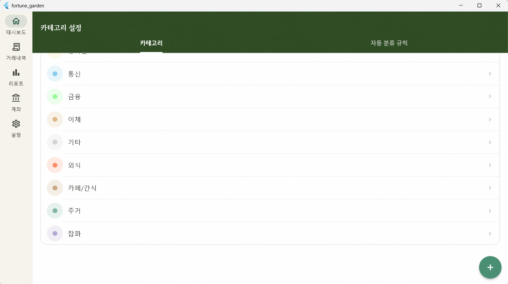
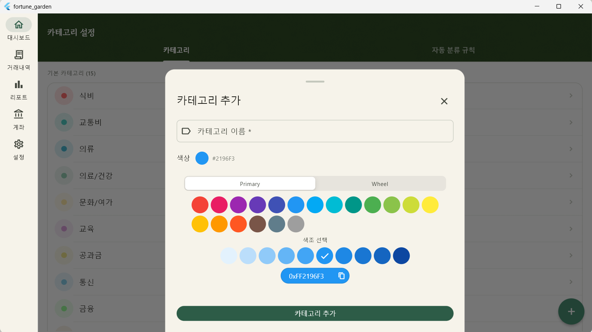
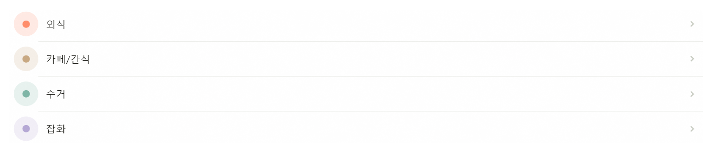

Overview
01. 작업 개요 및 점검
Fortune Garden 하이브리드 디자인 가이드를 바탕으로 카테고리 및 자동 분류 규칙 관리 화면을 재설계했습니다.
| 항목 | 상태 | 비고 |
|---|---|---|
| 카테고리 CRUD & 규칙 관리 | ✅ 완료 | Dismissible 스와이프 삭제 포함 |
| 헤더 배경색 & GrainOverlay | ✅ 완료 | 디자인 시스템 v1.1 기준 적용 |
| 목록 섹션 분리 | ✅ 완료 | 기본 / 커스텀 섹션 구분 |
| 규칙 목록 스타일 변경 | ✅ 완료 | ListTile → Card 기반 전환 |
Design System
02. 디자인 시스템 적용 상세


2.1. SliverAppBar 및 TabBar 구성
헤더 배경색을 로컬 상수로 정의하고, TabBar를 AppBar 하단에 배치하여 스크롤 시에도 접근성을 유지하도록 했습니다.
// 헤더 배경색 정의 const _headerBgLight = Color(0xFF2D4A22); const _headerBgDark = Color(0xFF051A0F); // TabBar 스타일 적용 TabBar( labelColor: Colors.white, indicatorColor: Colors.white, ... )
2.2. 섹션 및 바텀시트 개선
-
섹션 분리:
isCustom필드를 기준으로 기본/커스텀 그룹핑 후_SectionHeader적용. -
바텀시트: 상단에 핸들 바(Handle Bar)를 추가하고
borderRadius를 20으로 상향 조정. -
헬퍼 함수: 중복되던 Hex ↔ Color 변환 로직을 전역
함수
_hexToColor,_colorToHex로 통합.
Database
03. 기본 카테고리 추가 및 반영

2인 가구의 지출 비중이 높은 항목을 세분화하여 데이터 분석의 정밀도를 높였습니다.
| 이름 | 색상 | 추가 사유 |
|---|---|---|
| 외식 | #FF8C69 | 집밥(식비)과 별개로 외식 비용 집계 |
| 카페/간식 | #C8A882 | 식비에 포함되던 기호식품 지출 분리 |
| 주거 | #7EB5A6 | 공과금과 구분되는 월세 및 관리비 항목 |
| 잡화 | #B5A8D5 | 마트 및 생활용품 구매 항목 분류 |
데이터 반영 방식 (beforeOpen)
기존 설치 기기에서도 데이터가 반영될 수 있도록
beforeOpen 콜백 내에서 _seedCategories()를
호출하도록 수정했습니다.
beforeOpen: (details) async { await customStatement('PRAGMA foreign_keys=ON'); await _seedCategories(); // insertAllOnConflictUpdate로 중복 방지 },
Architecture
04. Provider 의존 관계
상태 변화에 따른 데이터 무결성 유지를 위해
ref.invalidate를 적절히 배치했습니다.
-
CategoriesScreen:
allCategoriesProvider,categoryRulesProvider구독. - 상태 갱신: 카테고리/규칙 저장 및 삭제 시 관련 프로바이더를 무효화하여 즉각적인 UI 반영.
Pending
05. 미해결 및 추후 검토 사항
- 아이콘 선택 UI: 현재는 시딩된 고정값 사용 중. 사용자 커스텀 아이콘 선택 기능 필요.
- 규칙 정렬: 현재 숫자 직접 입력 방식인 우선순위 설정을 드래그 앤 드롭 정렬로 고도화 검토.
Comments